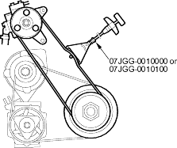
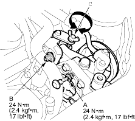

- Belt tension gauge set, 07JGG-0010000
- Belt tension gauge, 07JGG-0010100
Belt Tension Gauge Method
Inspection
- Remove the P/S reservoir from the bracket and set it aside.
- Attach the belt tension gauge to the belt and measure the tension of the belt. Follow the gauge manufacturer's instructions. If the belt is worn or damaged, replace it.
NOTE: Remove the belt tension gauge carefully to avoid hitting the gauge reset lever.
Tension:
Used Belt: 390 - 540 N (40 - 55 kgf, 88 - 121 lbf) New Belt: 740 - 880 N (75 - 90 kgf, 165 – 198 lbf) - If you installed a new belt, run the engine for 5 minutes, then readjust the belt to the used belt specification.

- Loosen the power steering pump mounting nut (A) and pump locknut (B).

- Turn the adjusting bolt (C) to get the proper belt tension, then retighten the mounting nut and locknut.
- Start the engine and turn the steering wheel from lock-to-lock several times, then stop the engine and recheck the tension of the belt.